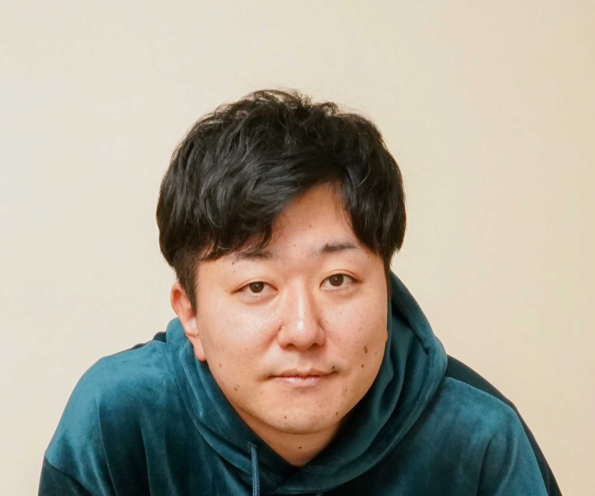

Ryota Mitsuhashi
Research Engineer, CyberAgent, Inc.
ryota_mitsuhashi_xa [at] cyberagent.co.jp


I am a research engineer at CyberAgent, Inc. My work spans research and development grounded in how language models work, as well as bringing these models into products.
Publications
-
"Who Is This User?" to "What Does This Purchase Mean?": A Deployed Pipeline for Semantic User Profiling at Bank Scale arXiv ConferenceIEEE International Conference on Data Mining (ICDM), 2026
-
MO-GRPO: Mitigating Reward Hacking of Group Relative Policy Optimization on Multi-Objective Problems arXivTransactions of the Association for Computational Linguistics (TACL), 2026
Domestic Conferences
-
Alignment of Responses Based on Preference Dataset Learning: Application to Japanese Large Language Models and Safety Evaluation PDF嗜好データセットの学習に基づく応答文のアライメント — 日本語大規模言語モデルへの適用と安全性の評価The 30th Annual Meeting of the Association for Natural Language Processing (NLP2024), Oral Presentation, 2024
Open-Source Activities
The models and datasets below were built and released as personal open-source contributions, independent of my employer.
Models
-
Tora-7B-v0.1 Hugging Face (2024)A Japanese LLM built with task arithmetic (chat vector), transferring instruction-following ability from an English LLM without additional training.
-
Japanese LLMs developed by a volunteer community under the GENIAC LLM development project (Matsuo Lab). Outperformed GPT-3.5-turbo in both automatic and human evaluation. I led dataset construction and post-training.
Datasets
-
OpenBookQA-Japanese-masked Hugging Face (2024)A Japanese translation of OpenBookQA, a multiple-choice question-answering benchmark, for post-training.
-
Open-Platypus-Japanese-masked Hugging Face (2024)A translated dataset for improving mathematical and reasoning abilities of LLMs.
-
aya-ja-nemotron-dpo-masked Hugging Face (2024)A preference dataset with responses regenerated by Nemotron-4-340B-Instruct to improve reasoning ability.
-
aya-ja-evol-instruct-calm3-dpo-masked Hugging Face (2024)A synthetic preference dataset built by evolving instructions with Evol-Instruct and regenerating responses with calm3-22b-chat.
Talks & Articles
-
Weights&Biases meetup #26 — Introduction of Agentic Reinforcement Trainer Speaker Deck (2025)
-
Sake RAG — Building a Dialogue System Specialized in Sake Knowledge Docswell (2025)A retrieval-augmented dialogue system specialized in sake knowledge, built with a 2B-scale LLM — from benchmark construction to a demo application.
Workshops
-
ca-reward-3b-ja: a Lightweight Japanese Reward Model PDF (2026)軽量な日本語報酬モデル ca-reward-3b-ja の構築と公開NLP2026 Workshop on Japanese Language Resources (JLR2026)
Experience
- 2024 – present
- Research Engineer, CyberAgent, Inc.
- 2021 – 2024
- Staff Engineer, Honda R&D Co., Ltd.
- 2019 – 2021
- Researcher, TOPPAN Holdings Inc.
Research Areas
- CyberAgent: Reward models; user attribute estimation.
- Honda R&D: Multimodal real-time dialogue systems.
- TOPPAN: Optical character recognition; text error correction.
- During university: Biosignal processing; non-contact pulse-wave extraction from facial video, with estimation and visualization of autonomic nervous system activity.
Education
- 2017 – 2019
- M.Eng., Graduate School of Science and Engineering, Chiba University
- 2015 – 2017
- B.Eng., Department of Information and Image Sciences, Chiba University
- 2010 – 2015
- Associate Degree, Department of Electronic Control Engineering, National Institute of Technology, Ibaraki College